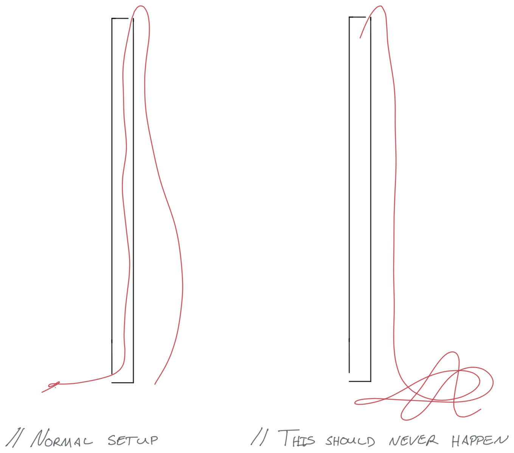

Debugging a launch-blocking issue
Aug 23, 2020 · 597 words · 3 minutes read
It was around 4PM a few Fridays ago when I heard that something had gone wrong, and I volunteered (was volunteered?) to help fix it. There was a broken internal configuration that blocked future immediate work for an upcoming launch that same day. I hadn’t worked on this particular system, just similar things before, but because I’m decent at visualizing and debugging these things, my colleague asked me for help with it.
In retrospect, it was something that probably said “this should never happen” in the documentation. I scoped it out with my colleague who was more familiar with it, since he had been working on it right before things went south and was convinced he had caused the bug in one of his setup steps. He was more familiar with a similar but slightly different configuration where this issue wasn’t even possible, and he wasn’t aware that an extra fail-safe was needed to avoid what he thought had gone wrong.
I looked at the system, confirmed the problem matched what he thought it was, and started thinking about how to fix it. Initially I tried using a basic tool, but it didn’t work (issue of scale). After a quick search online, I found a few potential solutions for the same issue, but they all seemed either too complicated or involved some tooling we didn’t have readily available.
After a little more digging and thinking, it turned out we had some existing tool that we could reuse to fix the incorrect configuration, even though it was designed for a different use (who knows why it was still lying around). After some paired work on the problem, we were able to go inside the system and correct the configuration, which unblocked my colleague and the subsequent launch.
To help encourage our blameless culture, after some very light teasing I brought up the fact that anyone could have easily made this mistake – myself very much included – and helped ensure that the extra fail-safe was in place for whoever used it next.
I’ve been intentionally vague with the story because it wasn’t a software bug at work; it was a lake-side sailboat problem. My cousin had accidentally pulled one end of his sailboat’s halyard up through the mast while rigging the boat, and the end he needed threaded through at the bottom was instead at the top of the 20 foot mast.

This boat, a 420, had a mast where the halyard went through the middle of the mast, while other 420s he had sailed just had it going up the side. He needed to be able to pull it back through the mast to hoist the sail (blocking his late-afternoon sailboat launch). This was pretty easy to confirm, and after trying my first attempt with a short wire (an issue of scale…) and finding that most of the solutions online were kind of complicated (“tie the end of the rope to a bolt and use a magnet to feed it through”), we found some sturdy long wire we reused to feed the end of the rope through the mast. Afterwards, for the failsafe, he tied a few figure 8 knots at the end to ensure it wouldn’t get pulled up again.
I’ve been thinking a lot recently about why fixing problems with physical things is so satisfying to me, and I was thinking through how familiar the debugging experience was between this real-life fix and and most of the software debugging I do. It’s really all the same!